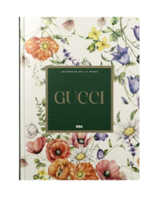

GUCCI

El libro Leyendas de la moda: Gucci
Esta obra presenta un recorrido profundo por la evolución de la casa Gucci, desde su fundación en 1921 por Guccio Gucci en Florencia
hasta su consolidación como una de las firmas más influyentes del lujo contemporáneo.
A través de una mirada técnica y cultural, el libro analiza cómo Gucci logró equilibrar la artesanía italiana con la innovación estética,
manteniendo su identidad a lo largo de más de un siglo.

El bolso Dionysus: un equilibrio entre historia y vanguardia
El Gucci Dionysus, lanzado en 2015, es uno de los modelos más emblemáticos de la era contemporánea de la marca.
Su diseño combina materiales nobles, como la piel granulada y el lienzo con el monograma GG Supreme, con un cierre metálico en forma de cabeza de tigre,
inspirado en la mitología griega.

Las colecciones textiles: innovación, color y herencia
Las colecciones textiles de Gucci se distinguen por su audacia estética y su impecable confección técnica.
Cada prenda refleja la filosofía de la marca: reinterpretar la elegancia italiana con una mirada moderna y experimental.